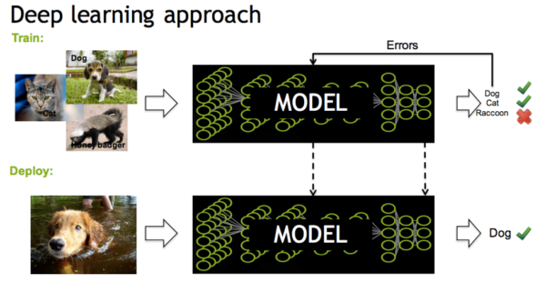
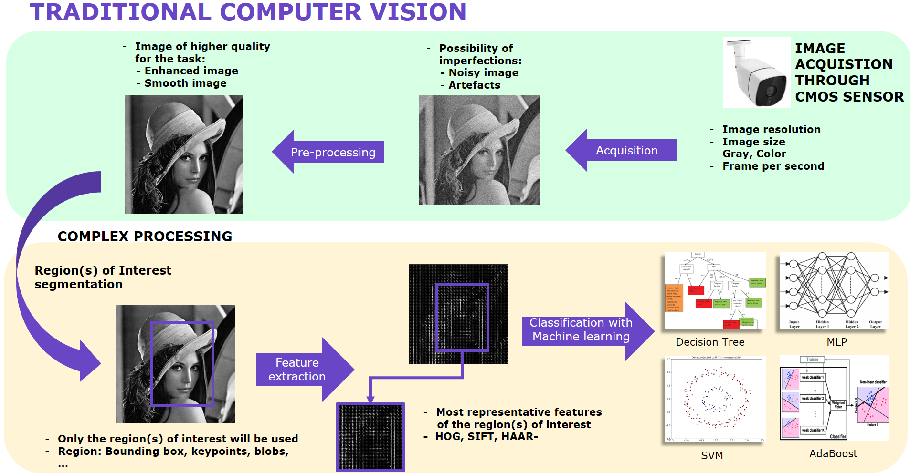
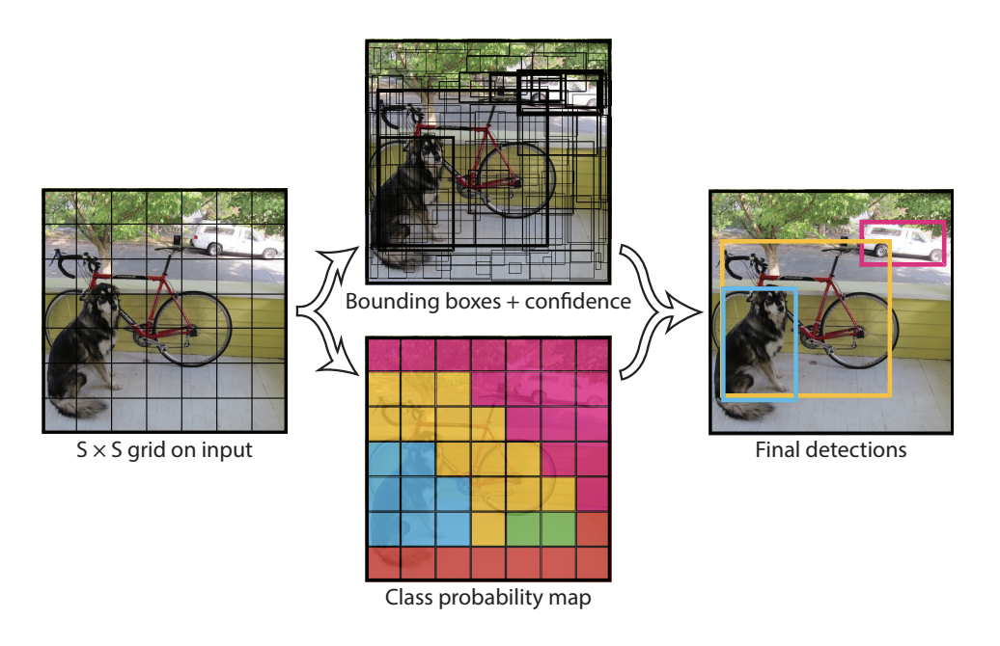
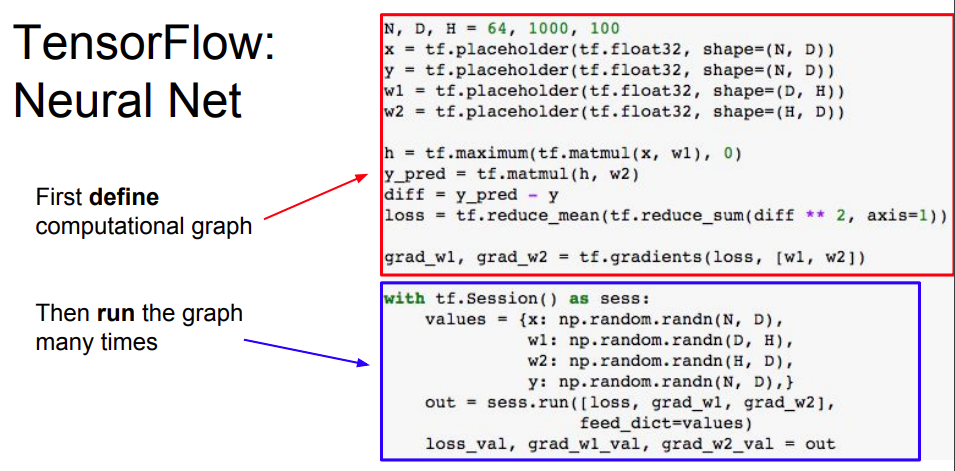

name: inverse layout: true class: center, middle, inverse --- class: neuralnet3, full-width, full-height # Neural Nets: from Perceptron to Deep Learning [or mimicking brain] .footnote[or skip it to [Tensorflow Playground](http://playground.tensorflow.org/)] --- ## What are deep artificial neural nets? --- layout: false .left-column[ ## What is it? ] .right-column[ Another bio-inspired, crazy-AI-maths unindentified object a.k.a: - the *most popular ML algorithm* after linear models - the reason for bi-weekly Breaking News from Google - the stuff that *already* tags maps, photos, unlocks your IPhone, translate your texts, recognize your speech,... - the stuff that *has been* reading bankchecks, detecting frauds, identifying threats...for more than 20 years - the stuff that *will* help drive your car, diagnose a cancer, transform a panda, generate people... ] --- .left-column[ ## For real ? ] .right-column[ Artificial Neural Networks are as old as Artificial Intelligence, initial goal was to create a **machine** that would reason the same way as the humain brain, except neurons would be central computing units connected by wires - historical **hardware** implementation of ANN before transistors became code with transistors and high level languages - with DL it has essentially become a piece of specific code running on GPU or TPU - but AI chip dream still around <img src="mark1.png" style="width: 40%"> ] --- .left-column[ ## Historically ] .right-column[ ANN started in 1943, complex timeline - Cybernetics era, followed by a 'crazy-expectations' era - Massively funded era (defence, IT, finance) sounded by an SVM era - **Deep Learning era** (since 2006) is actually the third wave, most succesfull period ] --- .left-column[ ## Second wave ] .right-column[ Starting in the 80's, essentially at AT&T, MIT, Microsoft and IBM - backpropagation, Convolutionnal Neural Networks, Long Short Term Memory - Hinton (Univ. Toronto), LeCun (Bell Labs), Bengio (Univ. Montreal) - training was hard but already in production for inference <img src="asamples.gif" width="400"> > " *At some point in the late 1990s, one of these systems was reading 10 to 20% of all the checks in the US.* " Y. LeCun (2014) ] --- .left-column[ ## Second wave ] .right-column[ (Shallow) Neural networks already in common use with crafted features engineering - *much workload* was concerned by this *feature engineering* and *data preprocessing* - once good features have been found, Neural Nets was just another ML technique (vs. SVM) - more dedicated solutions (CNN, LSTM) were *hard to train* ] --- .left-column[ ## Third wave ] .right-column[ Deep Neural networks learn the features and make inference easier - no *more complex preprocessing* and automatically learns the right features - much workload consists in training made possible with GPU and very large learning set - inference pipeline simpler but requires *computing power*  ] --- # How do you train deep neural nets? --- .left-column[ ## Jargon ] .right-column[ As any domain, Neural Nets has its own Domain Specific Language, in addition to traditional ML issues Comics view .red[*] .footnote[.red[*] source : https://codelabs.developers.google.com/] ] --- .left-column[ ## Maths ] .right-column[ An ANN output is a linear combination of nonlinear outputs taken over linear combination of the inputs - let's call the inputs `\(x=(x_1,\ldots,x_n)\)` and the weights `\(w\)` and the bias `\(b\)` of one neuron - let's call `\(f\)` the **activation function** of one given neuron - the output of one neuron is $$ f(w_1 x_1 + \ldots + w_n x_n + b) $$ - now, with m neurons, the final output is $$ g(x) = \sum_{i=1}^m \alpha_i f^i(w_1^i x_1 + \ldots + w_n^i x_n + b^i) + b_0$$ ] --- .left-column[ ## MLP ] .right-column[ What we have just described is the celebrated Multi-Layer-Perceptron architecture - ancestors of all modern architectures (fully connected part) - created by Rosenblatt in 1963 - part of the feedforward class of neural nets (no loop back) ] --- .left-column[ ## Activation Functions ] .right-column[ Activation function is the unit process function that every input transformation goes through. Initially, this function purpose was to mimick ON/OFF process of axons. Before deep learning, ANN practitioners favored differentiable activation function. But since deep learning upraisal, this situation has changed and now it can be - a smooth saturated function e.g. sigmoid, hyperbolic tangent - piecewise linear (Rectified Linear Unit) - anything (cosinus, identity) <img src="modern_activation.png" width="600"> ] --- .left-column[ ## Does it work? ] .right-column[ Hornik's universal approximation theorem (a.k.a Cybenko's theorem) ] --- .left-column[ ## Training ] .right-column[ Once architecture (number of layers, number of neurons, activation functions) is set, need to get the weights: - Find the optimal values of weights s.t the loss function `\(L(w)\)` is minimum over the training set of `\(N\)` examples where $$ \min L(w)=\frac{1}{N}\sum_{i=1}^N(g(x_i)-y_i)^2 $$ - Unconstrained non convex minimization problem over `\(w\)` variables - With many optimization variables <img src="optimization.gif" width="600"> ] --- .left-column[ ## Training ] .right-column[ The only viable option for such a training is gradient descent - iterative algorithm where you start from an initial guess of the values of the `\(w^0\)` and update them $$ w^{i+1}=w^{i}-\alpha \nabla_w L(w^{i}) $$ - `\(\alpha\)` is known as the gradient step (in optimization) and the learning rate (in NN) - quite simple...except you need `\(\nabla_w L(w^{i})\)` **backpropagation algorithm** ] --- .left-column[ ## Training ] .right-column[ Training an MLP (and it is even more true for Deep Neural Nets) then requires - scientific computing skills, computing power and **craft art** - dedicated libraries essentially for distributed backpropagation and optimization (all are in C++ but sklearn and DL4J) - solving an **optimization problem** ] --- .left-column[ ## Training ] .right-column[ In addition to traditional ML parameters (regularization), training an DNN requires setting the right hyperparameters for the optimization - optimization solvers: Stochastic Gradient Descent, Momentum, Adam, RMSProp, Nesterov... - SGD is the most used solver, it is a simple Gradient Descent where you compute `\(\nabla_w L(w^{i})\)` over a very small subset of the training basis (called *Minibatch*) and hence the Stochastic gradient <img src="opt1.gif" width="350"> ] --- .left-column[ ## Training ] .right-column[ Regularization is ensured through a ridge penalty term a.k.a *weight decay*, but - *learning rate*: most important term, increases model capacity indirectly through its impact on optimization. More advanced strategies update the learning rate (typically with TensorBoard) - *number of neurons*: too many neurons leads to overfitting <img src="learningrates.jpeg" width="350"> ] --- ## What do they work for? --- .left-column[ ## Automatic Processing Tasks ] .right-column[ Deep Learning upraisal was motivated by reaching human-like errors rate for traditional challenges in Robotics, IA... by taking advantage of large amount of data collected by american and chinese tech giants almost for free. This include - Computer Vision (pictures from Mobile Phones) - Natural Language Processing (Text and Comments from the World Wide Web) - Speech (excerpts of talks from Mobile Phones and Collaborative Platforms) ] --- class: neuralnet4, full-width, full-height # Computer Vision --- .left-column[ ## Computer Vision - Tasks ] .right-column[ In Image Processing (or Computer Vision typically for Robotics, Detection...), traditional challenges and tasks are - image classification (threat or not ?) - object detection (where is the threat in the picture ?) - segmentation (background removal), semantic (tumor detection) or instance segmentation (count people) - scene understanding, tracking, location, mapping (SLAM), 3d reconstruction... (defence, autonomous transportation) ] --- .left-column[ ## Computer Vision - Traditional Methods ] .right-column[ In Image Processing, decades of research created many different methods, like - template matching (similarity with fixed pattern) - low-level dedicated methods (Canny edge detection, watershed or CRF for image segmentation...) - Descriptors extractions and Machine Learning (face detection on Mobile phone, Viola-Jones)  ] --- .left-column[ ## Computer Vision - New architectures for DNN ] .right-column[ Convolutionnal Neural Networks (created by LeCun in 1989) first apply Convolution Layers on top of inputs (pixel values) to reduce the number of weights - achieve state-of-the-art performance for most CV challenges since 2012 - add to the MLP architecture layers of convolution adapted from traditional CV - add newcomers such as *pooling* (a.k.a subsampling) and *dropout* to regularize and lower the number of parameters <img src="cnn_2.png" width="500"> ] --- .left-column[ ## Computer Vision - Convolution ] .right-column[ Convolutionnal Layers specific to pictures - Fully Connected layers would involve too many parameters for one picture (think of a 1000 px `\times` 1000 px, first layer for one neuron would involve 1000000 weights) - Convolutions help reduce the number of parameters - Weights of the convolution become trainable parameters ] --- .left-column[ ## Computer Vision Architectures ] .right-column[ Many sophisticated architectures - Combines many layers ('deep') and in general several fully connected layers at the end - Usually ReLu-like activation functions and TanH at the end, but the devil is in the sequel of pooling, batch - Dropout only for training ! Not inference <img src="resnet.png" width="500"> ] --- .left-column[ ## Computer Vision Architectures ] .right-column[ Main challenges and architectures focus on image classification, but other CV tasks require more complex architectures - Typically, object detection outputs one or several bounding boxes containing most probable objects - Traditional CV uses pyramid of images and uses a classifier many times over many different regions and outputs region with gighest scores - Object recognition recent DL architectures rely on efficient subdivision and probability map to speed up object detection  ] --- .left-column[ ## Computer Vision Architectures ] .right-column[ A difficult CV task is semantic segmentation (determines which class each pixel belongs to) - Outputs a map (same size) of the original images - Apply convolution and then deconvolution - Labelling is tedious <img src="cat_segmentation.png" width="500"> ] --- .left-column[ ## Computer Vision: best practices ] .right-column[ Use a classical architecture (unless you're Google or Facebook) or even better transfer learning - Dataset: same aspect ratio, same resolution, same colormap - Size: as many pictures as possibles, don't overlook Labelling - Scaling: usually mean substraction (per pixel, per channel) - Augment: train and test (crops, shift, rotation...) - [DL's book](https://www.deeplearningbook.org/) Rule-Of-Thumb : need at list `\5,000\` examples per category and `\10,000,000\` examples to reach human error rate - Many practical advices [here](https://jeffmacaluso.github.io/post/DeepLearningRulesOfThumb/) ] --- .left-column[ ## Natural Language Processing ] .right-column[ Long Short Term Memory networks are part of Recurrent Neural Networks (created in 1982 by Hopfield) - unlike standard Feedforward they process inputs sequentially - they retain information (*contextual*) in a memory - works well for speech recognition, translation... <img src="rnn.gif" width="500"> ] --- .left-column[ ## Unsupervised ] .right-column[ Auto-encoders are an extension of MLP to automatically find the best reduction and coding/decoding at once - part of unsupervised learning - conceptually, it is a nonlinear dimension reduction technique decodable (unlike t-SNE) - often used to denoise signals, also for data synthesis <img src="enco.png" width="500"> ] --- .left-column[ ## Unsupervised ] .right-column[ Applications : - find the concept of cat spawning Web images and videos - probably unlocks your IPhone 10 - used as a compression for speech, image... <img src="nn_cat.jpeg" width="500"> ] --- ## Small focus on hardware --- .left-column[ ## Training ] .right-column[ In addition to learning rate and algorithmic improvements, modern Neural Nets work because - more data (millions time more), better backprop algorithm (symbolic differentiation) - progress in the initialization of weights and ReLu activation function - **clever use of GPU** (in lieue of Moore's law): allows to distribute many easy-computations (kind of vectorization) with NVIDIA setting the standards (with CUDA language) <img src="dl.png" width="550"> ] --- .left-column[ ## Training ] .right-column[ In addition, GPU war has already started with new adversaries and allies : - NVIDIA (with CUDA) vs. AMD (with OpenCL) - most DL libraries support only CUDA except stuff used at Apple - Microsoft/Intel (with FPGA) vs. Amazon/Xilinx/Baidu (with XPU) - Google (TPU) ] --- .left-column[ ## Training ] .right-column[ Big AI/fonders currently deploy strategic plans where training NN is different from infering NN : - Microsoft massively deploys Field Programmable Gate Array with Intel Nervana for Cloud Deep Learning - TPU/XPU (mix of CPU/GPU/FPGA) would go for inference ! ] --- .left-column[ ## On the future of deep learning ] .right-column[ The future algorithms in deep learning probably are : - **Generative Adversarial Networks** and **Autoencoders** - **Reinforcement Learning** and **unsupervised learning** to avoid supervised learning - New techniques such as **bayesian deep learning**,**synthetic gradients**, **evolution strategies** to counter slow backpropagation <img src="https://camo.githubusercontent.com/7443d2adadc104b885cac75a1894567c053c987f/687474703a2f2f7777772e6b646e7567676574732e636f6d2f77702d636f6e74656e742f75706c6f6164732f67656e657261746976652d616476657273617269616c2d6e6574776f726b2e706e67" width="500"> ] --- ## Generative Adversarial Networks (GANs) - Generative VS Discriminative (Classification, Regression) - Two neural networks : the Generator and the Discriminator that fights in a minimax game - Application : Text-to-image, image-to-image ... <img src="https://junyanz.github.io/CycleGAN/images/teaser.jpg" width="700"> --- .left-column[ ## Deep Learning at home ] .right-column[ ### Technical solutions : - **Python** : Theano (Montreal), Tensorflow (Google), Keras (Google), Caffe and Pytorch (Facebook), CNTK (Microsoft), MXNET (Amazon), Paddle (Baidu) - **R** : Keras (Google) - **Javascript** : deeplearning.js, ex : [Teachable machines](https://teachablemachine.withgoogle.com/) ] --- .left-column[ ## DL Frameworks ] .right-column[ ### Deep Learning frameworks : - Allows to build complicated architecture neural networks - They are all optimized for performance (low-level libraries written in C/C++ wrapped to be called by a high-level API) - Community support (continuous development) - GPU-acceleration and massive parallelizations - **Automatic differentation** ] --- .left-column[ ## DL Frameworks ] .right-column[ ### Computational Graphs and AD : - User define a computational graph as a composition of transformations (the flow) of the data - This graph will be optimized for execution and for gradient computation (automatic differentiation), usually many more parameters than output hence reverse mode (backward) is implemented - Define-and-run (static graph) vs. more general define-by-run (dynamic graph) ] --- .left-column[ ## DL Frameworks ] .right-column[ ### Tensorflow : - Static computational graph "build graph once and run it many times over distributed machines" - Developped by Google (for dev and production) - Massive community and side projects (mobile, tensorflow-probability)  ] --- .left-column[ ## DL Frameworks ] .right-column[ ### PyTorch : - Dynamic computational graph "build graph once at each forward pass" - Developped by Facebook (PyTorch+Caffe2 for production) - Massive community and side projects (pyro) - More flexible, research oriented ] --- .left-column[ ## Deep Learning at home ] .right-column[ ### Resources : - Introduction videos [Part 1](https://www.youtube.com/watch?v=aircAruvnKk) and [Part 2](https://www.youtube.com/watch?v=IHZwWFHWa-w) - Benchmark different libraries to recognize MNIST [github link](https://github.com/TheoLvs/machine-learning/blob/master/1.%20Computer%20Vision/2.%20MNIST%20Recognition.ipynb) - Stanford course CS231n : [Convolutional Neural Networks for Visual Recognition](http://cs231n.github.io/) - [Fast.ai course](http://course.fast.ai/part2.html) - [Deeplearning.ai course on Coursera](https://www.coursera.org/specializations/deep-learning) - [Google course](https://classroom.udacity.com/courses/ud730) ] --- ## That's all folks ! ---